센서 입력과 안전 판정
C · STM32 · ADC · CAN
- 두 페달 센서를 1 kHz로 읽어 보정 범위로 환산하고, 불일치 · 단선 · 단락을 판정
- 토크 컷오프로 페달 오차에 의한 의도치 않은 출발 차단
Cho Yongjun · Embedded Firmware
자작 전기차에서는 두 페달 센서가 10% 이상 어긋난 채 100 ms가 지나면 인버터로 가는 토크 명령을 끊는 차량 제어기(VCU) 펌웨어를, RAM 64 KB의 STM32L432KC로는 햇빛 아래에서도 읽히는 운전자 계기판을 만들었습니다.
식품 포장 장비에서는 FreeRTOS로 장치마다 태스크를 나누고 레일 도착 신호에 맞춰 서보 모터와 펌프를 움직여 한 사이클을 9초로 줄였습니다. 개인 프로젝트로 음원 칩(VS1053) 드라이버를 직접 작성해 MIDI 신디사이저를 만들었고, 지금은 PC 없이 연주할 수 있는 확장 보드를 설계하고 있습니다.
개인 · STM32F411에서 VS1053 드라이버와 CLI를 직접 작성
코멘토 · 디바이스 드라이버 개발 교육
30인 팀 · VCU 펌웨어(APPS · CAN 토크 제어), 운전자 계기판, 원격 모니터링 · 종합 5위
8인 팀 · FreeRTOS 포장 자동화 장비 제어 · 우수상
개인 · KiCad 확장 보드 PCB 설계 중 · 같은 달 교내 캡스톤 와우상(레시펫 장비)
컴퓨터공학과 · 부전공 전자전기공학부
한눈에 보는 기술 스택과, 프로젝트에서 어디에 썼는지를 함께 정리했습니다.
C · STM32 · ADC · CAN
STM32G474 · FreeRTOS · PWM · GPIO
SPI · UART · USB CDC · CAN
TouchGFX · STM32L432KC · ILI9488
KiCad · 오실로스코프 · 멀티미터
Python · MQTT · PostgreSQL · Claude Code
Vehicle Control · Formula Student Korea 2026 FSK 종합 5위
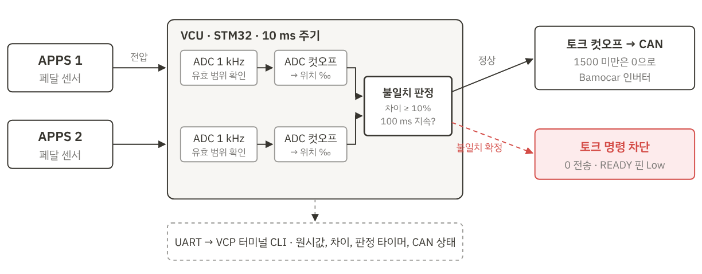
// apps.h (실제 코드 발췌) #define APPS_DIFF_MAX 100U // per-mille, 10.0% #define APPS_FAULT_MS 100U // 규정상 최대 비타당 시간 #define APPS_TORQUE_CUTOFF 1500 // 이 미만 토크 명령은 0
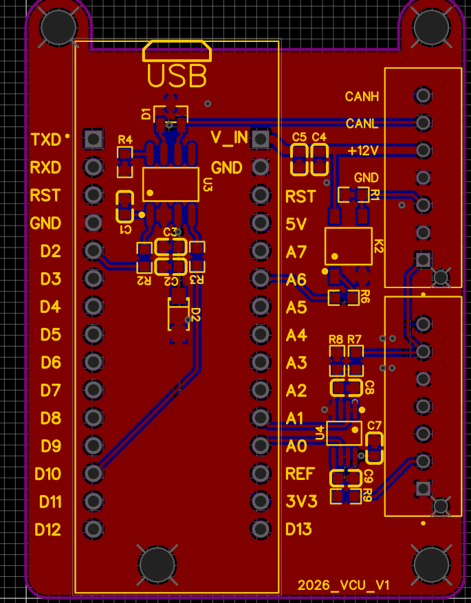
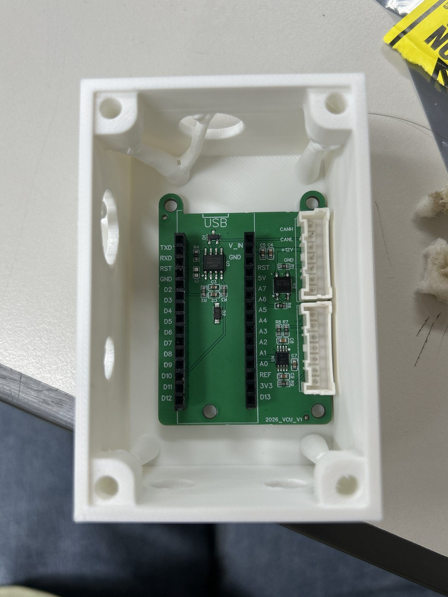
프로젝트마다 구조 → 문제 → 해결 → 결과 순서로 정리했습니다.
Embedded GUI · Formula Student Korea 2026 대회 탑재
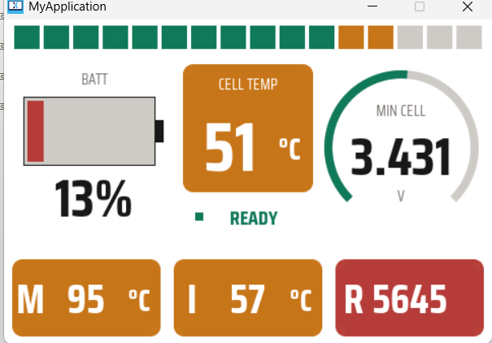
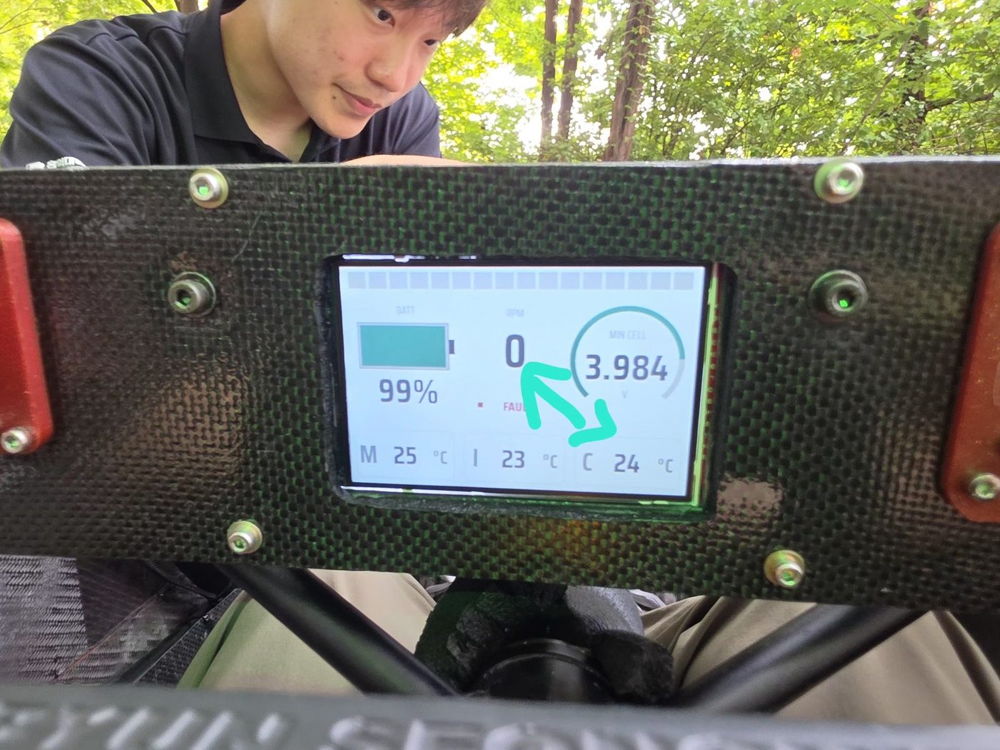
AI 활용 디자이너가 없어 실제 자동차 계기판 디자인을 모아 Claude Code가 종합해 시안을 만들게 하고, 저는 SPI LCD 부분 갱신 방식에 집중했습니다. 링 각도는 눈금 단위로 끊고, 경고 타일은 색이 바뀔 때만 통째로 다시 그리고, 고정 라벨은 갱신 영역 밖에 두는 방식을 각각 AI로 빠르게 구현해 실제 화면에서 비교 · 검증했습니다.
원격 모니터링 Monolith 로거(TMA-1)가 수집한 차량 CAN 데이터를 Wi-Fi로 Oracle Cloud 서버에 올려 차 밖에서도 실시간으로 보고, 원본은 직접 만든 수집기로 PostgreSQL에 쌓았습니다.
RTOS Control · 서울 영커리언스 챌린지 우수상 · 캡스톤 와우상
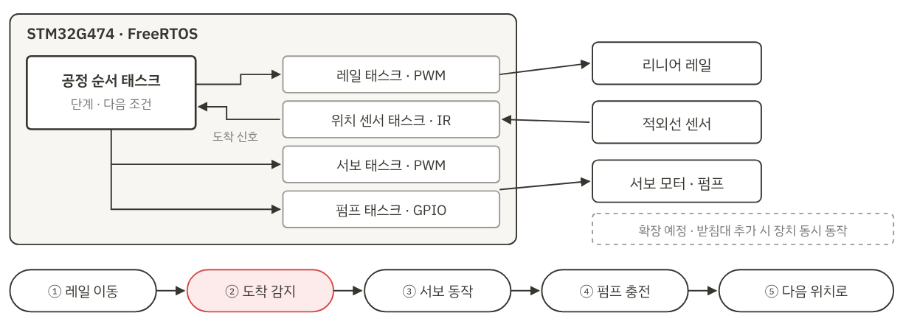
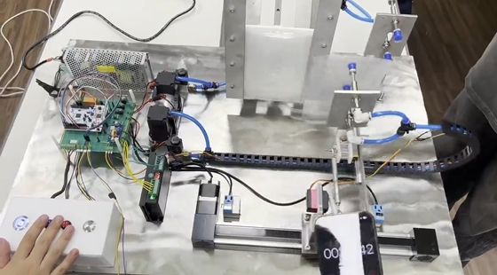
서울시가 주최하는 프로그램으로, 학생 팀이 기업의 기술 문제를 찾아 해결합니다. 협업 기업 레시펫은 반려동물 식품의 소분과 포장을 수작업으로 하고 있었습니다.
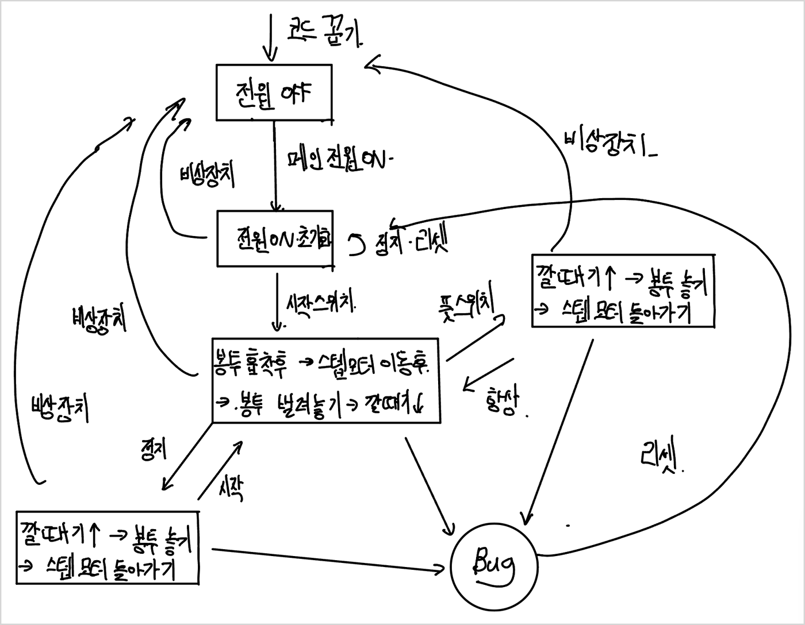
협업 식품 공장 적용을 고려해 SUS304 스테인리스강으로 제작할지, 시제품으로 기능 확인부터 받을지를 두고 의견이 갈렸습니다. 각 파트가 기한 안에 끝낼 수 있는 작업을 먼저 확인하자고 제안했고, 정해진 우선순위에 맞춰 제어 코드를 완성했습니다.
| 시기 | 대회 | 결과 |
|---|---|---|
| 2026.06 | 서울 영커리언스 챌린지 · 주관 ㈜퍼플앤커리어그룹 | 우수상 |
| 2026.10 | 홍익대학교 제20회 공과대학 창의적 종합설계 경진대회 · 같은 장비를 캡스톤 디자인으로 출품 | 와우상 |
Driver · 개인 프로젝트
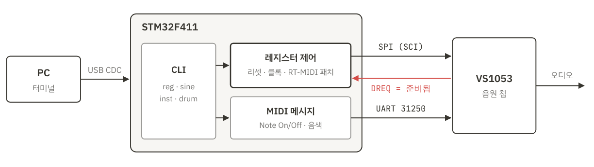
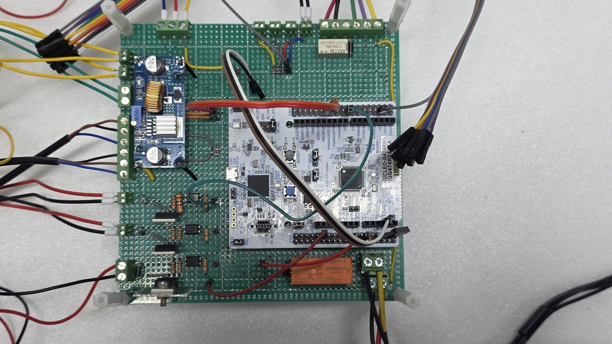
하나의 CLI에서 레지스터 조회, 테스트음, 음색 선택, 드럼 연주를 실행할 수 있게 됐고, 소리가 나지 않을 때 SPI 제어 문제인지 오디오 경로 문제인지 명령 하나로 나눠 볼 수 있습니다.
Hardware Design · 개인 프로젝트 PCB 설계 중
첫 버전은 컴퓨터의 USB 전원과 단일 MCU에 기대고 있었고, 악기를 바꾸거나 드럼을 칠 때마다 PC에서 명령을 입력해야 했습니다. 컴퓨터 없이 조작할 수 있도록 입력 장치와 확장 보드를 새로 설계하고 있습니다.
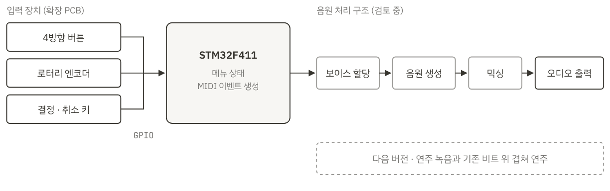
한정된 버튼과 노브로 연주, 패턴 기록, 악기 선택, 설정을 모두 다뤄야 합니다. 개발 보드에 남는 GPIO 수, 부품별 동작 전압, 주변장치 통신 방식도 함께 맞춰야 했습니다.
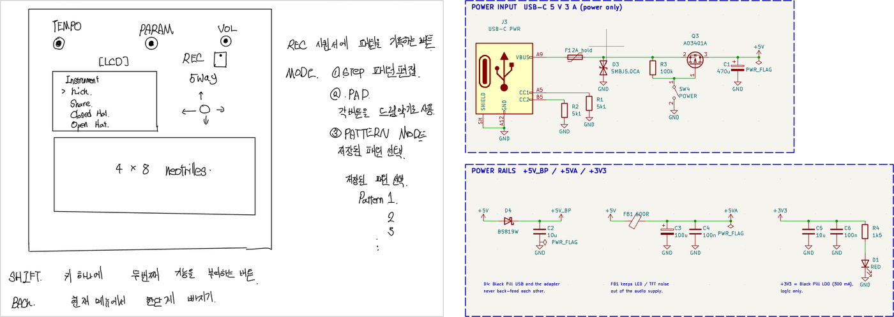
Idea & System Design · KeyMento 진행 중
| Synthesia | Simply Piano | KeyMento | |
|---|---|---|---|
| 즉시 피드백 | X | O | O |
| 피드백 형태 | 맞음 · 틀림 개수 | 파랑 · 빨강 음표 | 등급 + 오차(ms) |
| 다음 음 안내 | 떨어지는 음표 | 화면 속 건반 | 건반 위 AR 원 |
| 안내 위치 | 별도 화면 | 별도 화면 | 실제 건반 위 |

정답 MIDI 파일, MIDI 키보드, 웹캠 세 가지로 나눴습니다.
PC에서 두 갈래로 처리합니다. MIDI 파싱 → 판정 엔진, 캘리브레이션 → AR 렌더링
Web UI와 Raspberry Pi LCD에 안내와 연주 결과 요약을 보여 줍니다.


AI-assisted · 개인 프로젝트 운영 중

페달 센서는 유효 범위와 두 채널의 차이를 확인하고, 작은 토크 명령은 컷오프로 걸러 의도하지 않은 출발을 막았습니다.
레일 도착 신호로 다음 장치를 시작했고, 음원 칩의 DREQ를 확인한 뒤에 명령을 보냈습니다.
기능마다 시험 회로와 CLI를 만들고, 통신이 안 되면 오실로스코프와 멀티미터로 하드웨어부터 가렸습니다.
CLI로 본 전압을 회로 팀원들과 함께 보며 원인을 좁혔고, 회로는 풀다운 저항으로, 남은 흔들림은 펌웨어로 나눠 막았습니다.
포장 장비는 계속 발전시킬 계획이 있어 장치마다 태스크를 나누고 받침대 추가 같은 확장을 미리 고려했습니다.
운전자 계기판은 직사광과 주변시를 기준으로, 검차용 정보는 CLI로 나눠 각자 필요한 값만 보이게 했습니다.